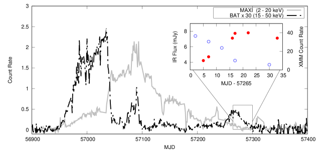
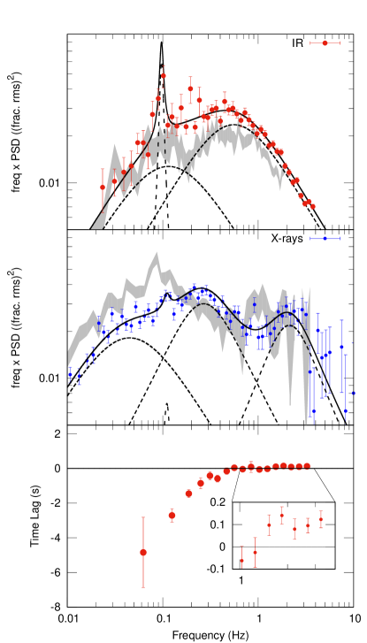
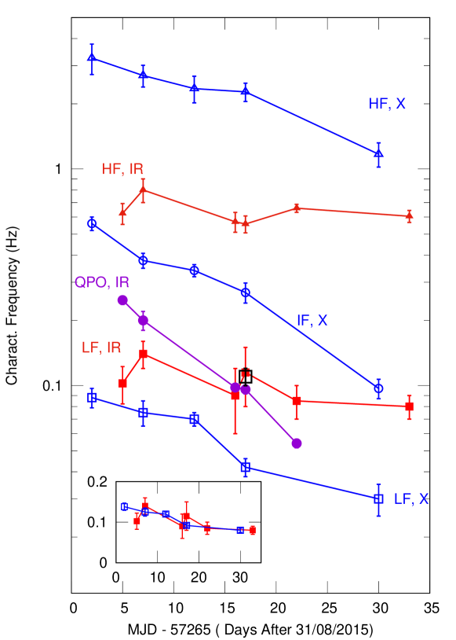

قيود فيزيائية من القياس الضوئي السريع في الأشعة تحت الحمراء القريبة للعابر ذي الثقب الأسود GX 339–4
الملخص
نعرض نتائج أول حملة قياس ضوئي سريع متعددة الأزمنة في الأشعة السينية/الأشعة تحت الحمراء للعابر ذي الثقب الأسود GX 339–4، أثناء اضمحلال فورته في عام 2015. درسنا تطور كثافات القدرة الطيفية ووجدنا فروقا قوية بين النطاقين. تتبع كثافة القدرة الطيفية في الأشعة السينية أنماطا تطورية قياسية، على الأرجح عاكسة لتغيرات في تدفق التراكم. أما كثافة القدرة الطيفية في الأشعة تحت الحمراء فتتطور ببطء شديد، مع كسر عالي التردد متوافق مع البقاء ثابتا عند Hz طوال الحملة. نناقش هذه النتيجة في سياق النماذج المتاحة حاليا لانبعاث الأشعة تحت الحمراء في عابرات الثقوب السوداء. ومع أن جميع النماذج ستحتاج إلى اختبار كمي في مواجهة هذا القيد غير المتوقع، فإننا نبين أن نفاثة نسبية باعثة للأشعة تحت الحمراء، ترشح التقلبات ذات المقاييس الزمنية القصيرة المحقونة من تدفق التراكم الداخل، تبدو السيناريو الأرجح.
1 المقدمة
ثنائيات الأشعة السينية ذات الثقوب السوداء (BHXRBs) هي أنظمة يكون فيها ثقب أسود ذو كتلة نجمية مصحوبا بنجم في مدار قريب، مما يؤدي إلى انتقال الكتلة من النجم إلى الثقب. وهي بواعث قوية متعددة الأطوال الموجية، وتظهر طيفا معقدا ومتغيرا من الترددات الراديوية إلى الأشعة السينية الصلبة (انظر مثلا Fender et al., 2000; Markoff et al., 2001; Corbel and Fender, 2002; Gandhi et al., 2011; Corbel et al., 2013, والمراجع الواردة هناك). الطيف المتوسط زمنيا هو نتيجة انبعاث عريض النطاق ومتغير من عدد من المكونات الفيزيائية، يصدر كل منها عبر مجالات طاقة عريضة ومتداخلة. في ما يسمى «الحالات الصلبة»، تهيمن على أطياف الأشعة السينية في BHXRBs مركبة تتبع قانونا أسيا، مع قطع حول 100 keV(Motta et al., 2009; Kalemci et al., 2014)، ويُعتقد عموما أنها تنشأ من تدفق تراكم داخلي رقيق بصريا وسميك هندسيا (Thorne and Price, 1975; Narayan and Yi, 1995; Zdziarski and Gierliński, 2004; Done et al., 2007). تقوم هذه البلازما الحارة بكومبتنة فوتونات حرارية أبرد (من فوق البنفسجية إلى الأشعة السينية اللينة) آتية من قرص تراكم، وربما أيضا فوتونات سنكروترونية أقل طاقة (بصرية أو حتى تحت حمراء) من التدفق الداخلي نفسه (Malzac and Belmont, 2009; Poutanen and Vurm, 2009; Veledina et al., 2011, 2013). وعند أطوال موجية أكبر، يمكن رؤية طيف مسطح (أو مقلوب قليلا) من الراديو وصولا إلى المجال البصري-تحت الأحمر (O-IR)، بما يمثل دليلا واضحا على وجود نفاثة مدمجة (Corbel and Fender, 2002; Gandhi et al., 2011; Russell et al., 2016). لم يتحقق بعد توافق بشأن المساهمة الكمية لكل من هذه المكونات الطيفية عند أطوال موجية مختلفة، ولا بشأن تطورها.
كانت دراسات خصائص التغير السريع لانبعاث الأشعة السينية مهمة تاريخيا، وإن بقيت غير حاسمة، في تقييد النماذج الفيزيائية (Nowak et al., 1999; Churazov et al., 2001; Ingram et al., 2009). تكشف كثافات القدرة الطيفية الفورية في مجال فورييه للأشعة السينية (PSD) أثناء الحالة الصلبة عن مزيج من مكونات عريضة النطاق وتذبذبات شبه دورية ضيقة (QPOs). يرتبط سلوك هذه المكونات ارتباطا وثيقا بالتطور الطيفي لهذه المصادر، إذ تزداد معظم تردداتها المميزة مع معدل التراكم و/أو مع تليّن انبعاث الأشعة السينية (Belloni et al., 2002, 2005). وغالبا ما ترتبط الترددات المميزة للضجيج عريض النطاق في الأشعة السينية بالمقاييس الزمنية اللزجة عند أنصاف أقطار معينة في تدفق التراكم، بحيث يُفسر تطورها بدلالة تطور هندسي لتدفق التراكم، الذي يُعتقد أنه يصبح أكثر تراصا باطراد حين يتطور المصدر من حالة طيفية صلبة إلى حالة لينة. ويدعم هذا التأويل أن أعلى هذه الترددات (ما يسمى «الكسر عالي التردد» في PSD الأشعة السينية) يبدو أنه يتشبع عند بضعة Hz (Churazov et al., 2001; Belloni et al., 2005; Ingram and Done, 2012): وهي قيمة متوافقة مع المقياس الزمني اللزج لتدفق داخلي حار رقيق بصريا وسميك هندسيا عند مداره الداخلي المستقر حول ثقب أسود ذي كتلة نجمية (Done et al., 2007). وجاءت تحسينات إضافية لهذه الصورة العامة من تقنيات طيفية-توقيتية أكثر تقدما في الأشعة السينية، حيث تُدرس التأخرات بوصفها دالة في كل من تردد فورييه والطاقة (انظر مثلا Nowak et al., 1999; Kotov et al., 2001; Uttley et al., 2014; De Marco et al., 2017; Kara et al., 2019; Mahmoud et al., 2019, والمراجع الواردة هناك).
اقتُرح مؤخرا تفسير بديل للمكونات عريضة النطاق المرصودة في PSD الأشعة السينية بواسطة Veledina (2016)، بدلالة تداخل بين متصلين من كومبتنة. وسيستجيب كلا هذين المكونين لتقلبات معدل تراكم الكتلة، لكن مع تأخر متغير بينهما بسبب تغير مقياس زمن الانتشار من نصف قطر كومبتنة القرص إلى منطقة كومبتنة السنكروترون.
رُصدت أيضا تغيرات سريعة قوية عند أطوال موجية أطول، في المجال O-IR (Motch et al., 1982; Gandhi et al., 2008; Casella et al., 2010; Gandhi et al., 2016).
إن الظواهر المرصودة معقدة إلى حد كبير، إذ يمكن تقريبا لكل المكونات الطيفية المذكورة أعلاه أن تسهم في التغير المقاس: انبعاث معاد معالجته حراريا من القرص الخارجي، وانبعاث سنكروتروني من النفاثة ومن تدفق داخلي ممغنط. في بعض الحالات، أمكن للتدفق الداخلي أن يعيد إنتاج البيانات بوضوح (Veledina et al., 2017)، بينما حُدد في حالات أخرى أصل نفاثي على نحو آمن، على الأقل لمكون التغير الأسرع (دون الثانية) (Gandhi et al., 2008) ولا سيما عند أطوال موجية تحت حمراء (Casella et al., 2010)، وغالبا مع تأخر قدره  0.1 ثانية بالنسبة إلى تغير الأشعة السينية. وفي بعض الحالات على الأقل، أمكن لنموذج نفاثة الصدمات الداخلية أن يعيد إنتاج كل من التغير قصير المقياس الزمني والتوزيع الطيفي المتوسط للطاقة عريض النطاق بنجاح (Malzac, 2014; Malzac et al., 2018). وقدمت مجموعات بيانات إضافية قيودا أخرى على هندسة النفاثات النسبية (Gandhi et al., 2017)، وعلى العمليات الفيزيائية الجارية عند قاعدتها (Vincentelli et al., 2018).
0.1 ثانية بالنسبة إلى تغير الأشعة السينية. وفي بعض الحالات على الأقل، أمكن لنموذج نفاثة الصدمات الداخلية أن يعيد إنتاج كل من التغير قصير المقياس الزمني والتوزيع الطيفي المتوسط للطاقة عريض النطاق بنجاح (Malzac, 2014; Malzac et al., 2018). وقدمت مجموعات بيانات إضافية قيودا أخرى على هندسة النفاثات النسبية (Gandhi et al., 2017)، وعلى العمليات الفيزيائية الجارية عند قاعدتها (Vincentelli et al., 2018).
بوجه عام، تطورت دراسة التغير السريع متعدد الأطوال الموجية في BHXRBs بسرعة خلال السنوات الأخيرة، مظهرة إمكانات كبيرة لدراسة فيزياء عمليات التراكم-القذف. وقد حُصل على معظم النتائج المذكورة أعلاه من أرصاد منفردة، أُجريت على مصادر مختلفة أو أثناء فورات مختلفة، مما أعاق استقصاء تطور المكونات المتعددة. في هذا العمل نقدم نتائج حملة رصد امتدت 1 شهر لخصائص التغير السريع في الأشعة السينية والأشعة تحت الحمراء لـ GX 339–4 أثناء اضمحلال فورته في عام 2015. خلال هذه المرحلة، تظهر BHXRBs إعادة سطوع في الراديو تتبعها زيادة في اللمعان عند أطوال موجية O-IR (Corbel et al., 2013).
2 الأرصاد
تألفت الحملة من خمسة أرصاد شبه متزامنة في الأشعة السينية والأشعة تحت الحمراء، امتدت بين 2015-09-02 (MJD 57267) و2015-10-03 (MJD 57298). أُجريت أرصاد الأشعة السينية باستخدام XMM-Newton (P.I. Petrucci)، بينما جُمعت بيانات الأشعة تحت الحمراء باستخدام HAWK-I@VLT (معرّف البرنامج 095.D-0211(A), P.I. Casella). وقد وُصفت مجموعة بيانات الأشعة السينية كاملة بالتفصيل سابقا بواسطة De Marco et al. (2017)، الذي حلل تطور تأخر الصدى، وبواسطة Stiele and Kong (2017)، الذي عرض تحليلا توقيتيا وطيفيا، وبواسطة Wang-Ji et al. (2018)، الذي ركز على الخصائص الطيفية. وللحصول على نظرة عامة إلى كامل مجموعة بيانات الأشعة السينية نحيل القارئ إلى هذه الأعمال. نركز هنا على خصائص تغير الأشعة تحت الحمراء ومقارنتها بتغير الأشعة السينية.
2.1 أرصاد الأشعة السينية
استخرجنا البيانات من كاميرا XMM-Newton Epic-pn (Strüder et al., 2001). أُخذت الأرصاد الثلاثة الأولى (اليوم 2 و7 و12 من سبتمبر 2015) في وضع التوقيت، بينما أُخذ الرصدان الأخيران (اليومان 17 و30 من سبتمبر 2015) في وضع النافذة الصغيرة. وباتباع الإجراء الموصوف في De Marco et al. (2017)، استخرجنا الأحداث في نطاق 2-10 keV، داخل صندوق حجمه الزاوي ثانية قوسية في الحالة الأولى (RAWX بين 28 و48)، وداخل دائرة نصف قطرها 40 ثانية قوسية حول المصدر في الحالة الأخيرة. حُولت المنحنيات المستخرجة إلى مركز الكتلة للنظام الشمسي في نظام الزمن الديناميكي الباري المركزي، باستخدام الأمر barycen. واستُخرجت كل منحنيات الضوء في الأشعة السينية بأعلى دقة زمنية متاحة: أي 5.7 ms للأرصاد الثلاثة الأولى و7.8 ms للرصدين الأخيرين.
2.2 بيانات الأشعة تحت الحمراء
جمعنا بيانات في الأشعة تحت الحمراء (النطاق  ) بدقة زمنية عالية باستخدام HAWK-I المركب على VLT UT-4/Yepun. وHAWK-I مصوّر واسع المجال في الأشعة تحت الحمراء القريبة (من 0.97 إلى 2.31
) بدقة زمنية عالية باستخدام HAWK-I المركب على VLT UT-4/Yepun. وHAWK-I مصوّر واسع المجال في الأشعة تحت الحمراء القريبة (من 0.97 إلى 2.31  m) يتكون من أربعة كواشف HAWAII 2RG بقياس 2048x2048 بكسل (Pirard et al., 2004). ولبلوغ دقة زمنية دون الثانية، أُجريت الأرصاد في وضع Fast-Phot، بقراءة شريط فقط مكوّن من 16 نوافذ متجاورة بحجم 128 x 64 بكسل في كل ربع. أتاح ذلك بلوغ دقة زمنية قصيرة قدرها 0.105 ثانية في الحقبتين الأوليين (اليومان 6 و7 من سبتمبر)، و0.125 ثانية للحقبتين 3 و4 (اليومان 17 و22 من سبتمبر)، و0.25 ثانية للحقبة الأخيرة (اليوم 3 من أكتوبر). وتتضمن البيانات فجوة قصيرة (طولها
m) يتكون من أربعة كواشف HAWAII 2RG بقياس 2048x2048 بكسل (Pirard et al., 2004). ولبلوغ دقة زمنية دون الثانية، أُجريت الأرصاد في وضع Fast-Phot، بقراءة شريط فقط مكوّن من 16 نوافذ متجاورة بحجم 128 x 64 بكسل في كل ربع. أتاح ذلك بلوغ دقة زمنية قصيرة قدرها 0.105 ثانية في الحقبتين الأوليين (اليومان 6 و7 من سبتمبر)، و0.125 ثانية للحقبتين 3 و4 (اليومان 17 و22 من سبتمبر)، و0.25 ثانية للحقبة الأخيرة (اليوم 3 من أكتوبر). وتتضمن البيانات فجوة قصيرة (طولها  3 ثانية) كل 250 تعريضات، لتفريغ مخزن الجهاز. ثم مُلئت الفجوات باستخدام الطريقة الموصوفة في (Kalamkar et al., 2016).
وُجه الجهاز بحيث يضع
الهدف ونجما مرجعيا لامعا (Ks=9.5) في الربع السفلي الأيسر (Q1). استُخرجت البيانات الضوئية باستخدام أدوات برنامج اختزال بيانات ULTRACAM11
1
انظر أيضا http://deneb.astro.warwick.ac.uk/phsaap/ultracam/ (Dhillon et al., 2007). واشتُقت معاملات الاستخراج من النجم المرجعي اللامع وموضعه، وربط موضع الهدف بهذا الموضع في كل تعريض. ولأخذ تأثيرات الرؤية في الحسبان، استُخدمت النسبة بين معدل عد المصدر ومعدل عد النجم المرجعي. ثم وُضع زمن كل إطار في نظام الزمن الديناميكي الباري المركزي.
3 ثانية) كل 250 تعريضات، لتفريغ مخزن الجهاز. ثم مُلئت الفجوات باستخدام الطريقة الموصوفة في (Kalamkar et al., 2016).
وُجه الجهاز بحيث يضع
الهدف ونجما مرجعيا لامعا (Ks=9.5) في الربع السفلي الأيسر (Q1). استُخرجت البيانات الضوئية باستخدام أدوات برنامج اختزال بيانات ULTRACAM11
1
انظر أيضا http://deneb.astro.warwick.ac.uk/phsaap/ultracam/ (Dhillon et al., 2007). واشتُقت معاملات الاستخراج من النجم المرجعي اللامع وموضعه، وربط موضع الهدف بهذا الموضع في كل تعريض. ولأخذ تأثيرات الرؤية في الحسبان، استُخدمت النسبة بين معدل عد المصدر ومعدل عد النجم المرجعي. ثم وُضع زمن كل إطار في نظام الزمن الديناميكي الباري المركزي.
3 التحليل والنتائج
أظهر التحليل الطيفي لرصد الأشعة السينية (كما ورد في De Marco et al., 2017) أن المصدر كان قد بلغ بالفعل الحالة الصلبة أثناء حملتنا. ويُرسم قدر الأشعة تحت الحمراء المتوسط ومعدل العد في الأشعة السينية لكل حقبة في الشكل 1، مبينا أننا رصدنا المصدر أثناء إعادة سطوعه النموذجية في O-IR (Dinçer et al., 2012; Corbel et al., 2013)، مع ذروة في اليوم 17 من سبتمبر.

ولقياس التغير في نطاقي الأشعة السينية والأشعة تحت الحمراء كميا، حسبنا تحويل فورييه السريع لكلا منحنيي الضوء في جميع الأرصاد. وبالنسبة إلى الأشعة السينية اخترنا 65536 خانة لكل مقطع؛ أما بالنسبة إلى الأشعة تحت الحمراء فاستخدمنا 256 خانة لكل مقطع في الحقبة الأولى و1024 للحقب الباقية، بسبب بنية البيانات. ثم حسبنا PSDs، معتمدين تطبيعا للكسر التربيعي للجذر المتوسط المربع rms (Belloni and Hasinger, 1990). في الشكل 2 (اللوحتان العليا والوسطى) نرسم PSDs للأشعة السينية والأشعة تحت الحمراء من اليوم 17 من سبتمبر. أظهرت كل PSDs للأشعة السينية والأشعة تحت الحمراء الضجيج عريض النطاق المرصود عادة في الحالة الصلبة(-المتوسطة) لـ BHXRBs (Belloni et al., 2005; Done et al., 2007). ولقياس أي تأخر محتمل تابع للتردد بين النطاقين، حسبنا التأخرات الزمنية بينهما للحقبة الوحيدة التي كان فيها التزامن دقيقا، وهي اليوم 17 من سبتمبر، متبعين الوصفات الموصوفة في Uttley et al. (2014). نعرض التأخر الزمني في اللوحة السفلى من الشكل 2، حيث تعني التأخرات الموجبة أن الأشعة تحت الحمراء تتأخر عن الأشعة السينية. عند الترددات المنخفضة تسبق الأشعة تحت الحمراء الأشعة السينية بما يصل إلى عدة ثوان، بينما عند الترددات العالية تتأخر الأشعة تحت الحمراء عن الأشعة السينية بمقدار  0.1 ثانية. وفي مجالات التردد التي كُشفت فيها التأخرات، وُجد أن التماسك الذاتي هو
0.1 ثانية. وفي مجالات التردد التي كُشفت فيها التأخرات، وُجد أن التماسك الذاتي هو  0.2 (Vincentelli وآخرون، قيد الإعداد).
0.2 (Vincentelli وآخرون، قيد الإعداد).
اتباعا لـ Belloni et al. (2002, 2005) نمذجنا كل PSDs بعدد من الدوال اللورنتزية (). كانت هناك حاجة إلى ثلاثة مكونات عريضة لتقريب الضجيج عريض النطاق في الأشعة السينية
وسنشير إليها فيما يلي على التوالي بالرموز و و. كما أظهرت إحدى PSDs للأشعة السينية (من حقبة اليوم 17 من سبتمبر) دليلا هامشيا على سمة أضيق عند Hz، نعرّفها على أنها QPO من النوع C (Casella et al., 2005; Motta et al., 2011). أما في الأشعة تحت الحمراء فوجدنا أن مكونين عريضين (واحد منخفض التردد وآخر عالي التردد،  و) يكفيان لتقريب الضجيج عريض النطاق. ومع ذلك، احتاجت كل PSDs للأشعة تحت الحمراء باستثناء الأخيرة إلى مكون لورنتزي إضافي (نسميه فيما يلي ) لتمثيل وجود سمة ضيقة. ونعرّف هذا المكون الضيق على أنه QPO من النوع C، لأن تردده في اليوم 17 من سبتمبر متوافق مع تردد QPO من النوع C في الأشعة السينية المتزامنة.
و) يكفيان لتقريب الضجيج عريض النطاق. ومع ذلك، احتاجت كل PSDs للأشعة تحت الحمراء باستثناء الأخيرة إلى مكون لورنتزي إضافي (نسميه فيما يلي ) لتمثيل وجود سمة ضيقة. ونعرّف هذا المكون الضيق على أنه QPO من النوع C، لأن تردده في اليوم 17 من سبتمبر متوافق مع تردد QPO من النوع C في الأشعة السينية المتزامنة.
في الشكل 3 نعرض التطور الزمني للترددات المميزة () لكل المكونات. وترد الملاءمات الخطية بوصفها دالة في الزمن () في الجدول 1. نلاحظ أن ميل مكون الأشعة تحت الحمراء عالي التردد متوافق مع الصفر: لذلك لاءمنا هذا المكون أيضا بثابت، فحصلنا على Hz. كما أجرينا ملاءمات خطية () لقياس الارتباطات الممكنة بين المكونين المنخفض والعالي التردد (انظر الجدول 1). لم نستطع إجراء ملاءمات مباشرة لقياس الارتباطات الممكنة بين ترددات الأشعة السينية والأشعة تحت الحمراء، لأن معظم القياسات ليست متزامنة. ومع ذلك، بربط ملاءمات تطورها الزمني المنفرد نجد أن مكون الأشعة تحت الحمراء منخفض التردد متوافق مع امتلاك إزاحة ثابتة قدرها  Hz بالنسبة إلى مكون الأشعة السينية منخفض التردد
Hz بالنسبة إلى مكون الأشعة السينية منخفض التردد  (انظر الإطار الداخلي في الشكل 3).
(انظر الإطار الداخلي في الشكل 3).
لا تسمح اللايقينات الكبيرة والعدد الصغير من النقاط بإجراء اختبارات إحصائية مفيدة لهذه الارتباطات. وينطبق ذلك خصوصا على  ، المتوافق إما مع كونه ثابتا أو مع امتلاك إزاحة ثابتة بالنسبة إلى
، المتوافق إما مع كونه ثابتا أو مع امتلاك إزاحة ثابتة بالنسبة إلى  يتناقص ببطء.
يتناقص ببطء.


 بمقدار +0.05 Hz، لإظهار كيف أن الترددين متوافقان مع امتلاك إزاحة ثابتة بينهما.
بمقدار +0.05 Hz، لإظهار كيف أن الترددين متوافقان مع امتلاك إزاحة ثابتة بينهما.
| Frequency vs Time | ||||||
| Band | ||||||
| ( ) | (Hz) | ( ) | (Hz) | ( ) | (Hz) | |
| IR | 0.15 0.1 | 0.08 0.05 | 1.05 0.09 | 0.2 0.1 | 1.6 4 | 0.4 0.3 |
| X-rays | 0.21 0.05 | 0.05 0.04 | 1.39 0.14 | 0.3 0.2 | 7 2 | 1.9 1.4 |
| Frequency vs Frequency | ||||||
| Bands | ||||||
| (Hz) | ||||||
| vs | 32 9 | 0.36 0.44 | ||||
| vs | 0 2 | 0.6 0.2 |
 ). حيث إن
). حيث إن  هو الزمن بالأيام ابتداء من MJD 57265. وفي الجدول السفلي نعرض نتائج الملاءمة التي تربط تطور مكونات مختلفة داخل نطاق كهرومغناطيسي واحد. وبخاصة ركزنا على الاتجاه بين المكون المنخفض والمكون العالي التردد، أي . كشف اختبار
هو الزمن بالأيام ابتداء من MJD 57265. وفي الجدول السفلي نعرض نتائج الملاءمة التي تربط تطور مكونات مختلفة داخل نطاق كهرومغناطيسي واحد. وبخاصة ركزنا على الاتجاه بين المكون المنخفض والمكون العالي التردد، أي . كشف اختبار  أن كل الملاءمات كانت مقبولة ضمن مجال ثقة 95%. وترد جميع الأخطاء عند مستوى دلالة 90%.
أن كل الملاءمات كانت مقبولة ضمن مجال ثقة 95%. وترد جميع الأخطاء عند مستوى دلالة 90%.4 المناقشة
اكتشفنا تطورا غريبا في الترددات المميزة لانبعاث الأشعة تحت الحمراء من BHT GX 339–4، أثناء اضمحلال فورته في عام 2015. وبالتحديد، في حين يظهر PSD الأشعة السينية السلوك المتوقع، مع بقاء كل تردداته المميزة
متناسبة فيما بينها (أي بنسبة ثابتة) بينما
تنخفض بنحو عامل 5 خلال نحو 30 أيام، يكشف PSD الأشعة تحت الحمراء ضجيجا عريض النطاق مستقرا نسبيا، إذ لا تتناقص تردداته المميزة إلا ببطء شديد. ويتوافق مكون الأشعة تحت الحمراء منخفض التردد مع تتبع مكون الأشعة السينية منخفض التردد عن قرب، مع إزاحة ثابتة قدرها  Hz (انظر الإطار الداخلي في الشكل 3). ويتطور QPO من النوع C بسرعة أكبر، وبمعدل تناقص مشابه نسبيا لمعدل مكون الأشعة السينية متوسط التردد. والمفاجئ هو التناقص البطيء لمكون الأشعة تحت الحمراء عالي التردد، الذي يبدو منفصلا بوضوح عن مكون الأشعة السينية عالي التردد. وبدلا من ذلك، فهو متوافق مع امتلاك إزاحة ثابتة قدرها Hz بالنسبة إلى مكون الأشعة تحت الحمراء منخفض التردد، وكذلك مع كونه ثابتا تقريبا عند Hz طوال الحملة.
Hz (انظر الإطار الداخلي في الشكل 3). ويتطور QPO من النوع C بسرعة أكبر، وبمعدل تناقص مشابه نسبيا لمعدل مكون الأشعة السينية متوسط التردد. والمفاجئ هو التناقص البطيء لمكون الأشعة تحت الحمراء عالي التردد، الذي يبدو منفصلا بوضوح عن مكون الأشعة السينية عالي التردد. وبدلا من ذلك، فهو متوافق مع امتلاك إزاحة ثابتة قدرها Hz بالنسبة إلى مكون الأشعة تحت الحمراء منخفض التردد، وكذلك مع كونه ثابتا تقريبا عند Hz طوال الحملة.
يحمل كشف مثل هذا التطور المميز لـ PSD الأشعة تحت الحمراء قدرة تفسيرية قوية، لأنه يوفر قيودا على النماذج الرئيسة التي نوقشت في الأدبيات لانبعاث الأشعة تحت الحمراء من BHTs: إعادة المعالجة من القرص الخارجي، والانبعاث السنكروتروني من تدفق داخلي ممغنط، والانبعاث السنكروتروني من نفاثة. وربما يمكن تفسير مكون الأشعة تحت الحمراء منخفض التردد المرتبط بمكون الأشعة السينية منخفض التردد على نحو طبيعي في جميع السيناريوهات. أما الاستقرار الكبير لمكون الأشعة تحت الحمراء عالي التردد فهو أكثر تقييدا. لا تسمح إحصاءات البيانات بأن نستنتج ما إذا كان هذا المكون يتناقص ببطء شديد أم ثابت، لكن في كلتا الحالتين من الواضح أن تطوره منفصل عن تطور مكون الأشعة السينية عالي التردد. وفي الوقت نفسه، تظهر التأخرات الزمنية أن التغير في النطاقين مترابط على مدى عريض من الترددات، بما في ذلك الترددات الأعلى من الكسر عالي التردد في الأشعة تحت الحمراء (الشكل 2)، مما يعني أن الإشارتين ليستا مستقلتين.
نلاحظ أنه حتى الآن كشفت كل أرصاد القياس الضوئي السريع في O-IR المبلغ عنها لـ GX 339–4 مكونا عالي التردد عند ترددات مشابهة لتلك المذكورة هنا، وإن لم يحدث ذلك قط في الفورة نفسها (Casella et al., 2010; Gandhi et al., 2010; Kalamkar et al., 2016; Vincentelli et al., 2018). وقد يشير هذا إلى أن هذا التردد ثابت بالفعل، لكن ستكون هناك حاجة إلى أرصاد إضافية، ولا سيما حملات رصد أطول، لتأكيد ذلك.
في ما يلي، نناقش تبعات هذه النتائج في سياق سيناريوهات فيزيائية ممكنة.
4.1 القرص الخارجي
يمكن تفسير الاستقرار المرصود لمكون الأشعة تحت الحمراء عالي التردد بسهولة إذا كان التغير المرصود في الأشعة تحت الحمراء مهيمنا عليه بإعادة معالجة انبعاث الأشعة السينية من القرص الخارجي. عندئذ سيكون تردد الأشعة تحت الحمراء الأعظمي مرتبطا بدالة استجابة القرص، التي لا يُتوقع أن تتغير مع الزمن.
إلا أن التأخرات التي نقيسها أصغر من أن تتوافق مع زمن انتقال الضوء من المناطق الداخلية الباعثة للأشعة السينية في التدفق إلى المناطق الخارجية الباعثة للأشعة تحت الحمراء في القرص (أو حتى سالبة، انظر الشكل 2، اللوحة السفلى). إضافة إلى ذلك، سبق أن أُبلغ عن التأخر نفسه البالغ 0.1 ثانية بضع مرات لهذا المصدر، وفي تلك الحالات كان الأصل الحراري (Gandhi et al., 2008; Casella et al., 2010; Gandhi et al., 2017) مستبعدا بقوة. لذلك نستنتج أن سيناريو إعادة المعالجة يمكن استبعاده بأمان.
4.2 التدفق الداخلي الحار
ننظر هنا في الفرضية القائلة إن كامل الانبعاث المتغير في الأشعة تحت الحمراء يأتي من تدفق داخلي ممغنط، وأن تطور PSD الأشعة السينية يُفسر بدلالة تداخل بين متصلين من كومبتنة (Veledina et al., 2013; Veledina, 2016).
عندئذ سيوافق الانبعاث المتغير المرصود في الأشعة تحت الحمراء فوتونات السنكروترون البذرية المنبعثة قبل حدوث الكومبتنة في التدفق الداخلي الحار، ومن ثم يمكن تفسيره كمؤشر على معدل تراكم الكتلة. ويمكن عندئذ ربط تناقص بطيء لكل الترددات المميزة في الأشعة تحت الحمراء بهندسة تتطور ببطء لتدفق التراكم الداخلي (Ingram and Done, 2012; Ingram et al., 2016).
إن الحفاظ على مكون O-IR عالي التردد ثابت ضمن هذا السيناريو سيتطلب أن يمتد التدفق الداخلي الممغنط إلى ما وراء  50 أنصاف أقطار شفارزشيلد (أو 100 أنصاف أقطار ثقالية، ) طوال مرحلة إعادة السطوع كلها. وينشأ معظم فيض الأشعة تحت الحمراء وكذلك تغيره في نموذج التدفق الداخلي الممغنط داخل منطقة بهذا الحجم (Veledina et al., 2013). ومن ناحية أخرى، نرى بوضوح ارتفاعا في فيض الأشعة تحت الحمراء مع تطور المصدر عبر أرصادنا في الحالة الصلبة (انظر الشكل 1). ولذلك، في ظل السيناريو نفسه، لا يمكن أن تُعزى تغيرات فيض O-IR فقط إلى تغير في حجم التدفق الداخلي الحار (انظر مثلا Poutanen et al., 2014).
50 أنصاف أقطار شفارزشيلد (أو 100 أنصاف أقطار ثقالية، ) طوال مرحلة إعادة السطوع كلها. وينشأ معظم فيض الأشعة تحت الحمراء وكذلك تغيره في نموذج التدفق الداخلي الممغنط داخل منطقة بهذا الحجم (Veledina et al., 2013). ومن ناحية أخرى، نرى بوضوح ارتفاعا في فيض الأشعة تحت الحمراء مع تطور المصدر عبر أرصادنا في الحالة الصلبة (انظر الشكل 1). ولذلك، في ظل السيناريو نفسه، لا يمكن أن تُعزى تغيرات فيض O-IR فقط إلى تغير في حجم التدفق الداخلي الحار (انظر مثلا Poutanen et al., 2014).
ومن المهم أيضا أنه في الحالة الصلبة لـ GX 339-4 وBHXRBs أخرى، يُرى الانبعاث الشبيه بالجسم الأسود في الأشعة السينية اللينة، الذي يُظن أنه ينشأ من قرص تراكم رقيق هندسيا وسميك بصريا، متغيرا بقدر ملحوظ ومتقدما أيضا على تغيرات قانون القدرة في الأشعة السينية المرتبطة، عبر مجال المقاييس الزمنية الذي تغطيه الكسور المنخفضة والعالية التردد المرصودة هنا (Wilkinson and Uttley, 2009; Uttley et al., 2011; De Marco et al., 2015, 2017). بالنسبة إلى الأقراص الرقيقة هندسيا، سيكون من الصعب تفسير مثل هذه المقاييس الزمنية القصيرة نسبيا (ثوان) لتغير متصل القرص بسعة كبيرة (عشرات في المئة)، والمولدة على الأرجح على المقياس الزمني اللزج المحلي، إذا كان انبعاث القرص ينشأ عند ، كما يقتضي نموذج التدفق الداخلي الحار كما قُدم في Veledina et al. (2013). ومن ناحية أخرى، على مقاييس زمنية للتغير أقصر حتى ( Hz)، تُرى «تأخرات صدى» للجسم الأسود، وبعضها، إذا فُسر ببساطة كأزمنة انتقال للضوء، يمكن أن يكون متوافقا مع مثل هذه الأنصاف الكبيرة (De Marco et al., 2017)، لكن تفسير مثل هذه التأخرات معقد، إذ إن تركيبها مع تأخرات المتصل ليس مجرد جمع بسيط (مثلا، انظر Mastroserio et al. 2019 لحالة صدى Fe K مع تأخرات المتصل في BHXRBs).
التأخرات الزمنية: التأخرات السالبة المقاسة عند الترددات المنخفضة متوقعة طبيعيا من نموذج التدفق الداخلي الحار (Veledina et al., 2011, 2017). ومن ناحية أخرى، مع ذلك، يبدو التأخر الموجب المقاس في الأشعة تحت الحمراء عند الترددات العالية صعب التوفيق مع هذا السيناريو، لأنه يعني أن الإشارة المكومبتنة تسبق بذورها. نلاحظ أن نمذجة هذا السيناريو أُنجزت فقط لعدد قليل من الأرصاد أثناء الحالة المتوسطة (Veledina et al., 2017; Veledina, 2018). ولذلك، هناك حاجة إلى محاكاة مخصصة جديدة لاختبار النموذج أيضا في الحالة الصلبة.
4.3 النفاثة المدمجة - الصدمات الداخلية
في هذا السيناريو، يُفسر كامل الانبعاث المتغير في الأشعة تحت الحمراء بدلالة انبعاث سنكروتروني من نفاثة، حيث تتصادم قذائف ذات سرعات مختلفة وتبدد طاقتها التفاضلية (Jamil et al., 2010; Malzac, 2014; Malzac et al., 2018). ويُفترض أن PSD لعامل لورنتز الخاص بالقذائف مطابق لـ PSD الأشعة السينية، الذي يُفترض أنه مؤشر على معدل التراكم. ستؤدي التقلبات السريعة في سرعة القذائف إلى تصادمها مبكرا في النفاثة، مبددة طاقتها الحركية (التفاضلية) ثم مشعة إياها بسرعة كبيرة. وسيظهر الانبعاث عند أطوال موجية أقصر (أطول)، الصادر من مناطق داخلية (خارجية) في النفاثة، تغيرا أسرع (أبطأ). وعند أي طول موجي معين، تضع مقاييس زمن التبدد والإشعاع في الصدمة حدا أعلى لتردد التغير الذي يمكن رصده، فتخمد التغير الأسرع (Malzac et al., 2018). يعتمد تخميد التردد على عدة معاملات فيزيائية، بما فيها عامل لورنتز المتوسط، وميل النفاثة، ومعدل التراكم المتوسط، وخصائص التغير المحقون. لذلك فإن الاستقرار المرصود لهذا التردد أثناء اضمحلال الفورة، في حين يتناقص فيض الأشعة السينية والترددات المميزة للأشعة السينية (Belloni et al., 2005; Dinçer et al., 2012; De Marco et al., 2017)، يوفر قيودا كمية قوية على هذا السيناريو.
التأخرات الزمنية: يمكن تفسير تأخر الأشعة تحت الحمراء البالغ 0.1 ثانية والمرصود عند الترددات العالية بسهولة بدلالة زمن انتقال التقلبات من التدفق الداخلي إلى النفاثة (Malzac, 2014; Malzac et al., 2018). وقد بيّن Malzac et al. (2018) أن التأخرات السالبة المرصودة عند الترددات المنخفضة يمكن أيضا أن يفسرها النموذج، بسبب استجابة تفاضلية للصدمات مع تعديل ناتج عن تعزيز دوبلر. وفي هذه الحالة أيضا، يلزم إجراء محاكاة مخصصة لقياس هذا السيناريو كميا لهذه المجموعة من البيانات.
4.4 ارتباط القرص بالنفاثة - نصف قطر الإطلاق
نركز هنا على احتمال أن يكون الانبعاث المتغير المرصود في الأشعة تحت الحمراء ناشئا في نفاثة، لكن تخميد التغير عالي التردد في الأشعة تحت الحمراء يحدث عند موضع إطلاق النفاثة، أي إن التغير كله في التدفق الداخلي لا يُنقل إلى النفاثة.
يمكن أن يحدث ذلك إذا كانت آلية إطلاق Blandford and Payne (1982) فاعلة (كما تقترح صور النفاثة الراديوية في M87 و3C84، Doeleman et al., 2012; Giovannini et al., 2018, لكن انظر Liska et al., 2018). في هذه الحالة، ستسحب النفاثة مادة (وتقلبات في معدل التراكم) من مجال من أنصاف الأقطار، بين المدار الداخلي المستقر وبعض نصف القطر  (Spruit, 2010). وبافتراض أن كل تردد فورييه مرصود في الأشعة السينية مرتبط بالمقياس الزمني اللزج عند نصف قطر معين (Done et al., 2007)، وأن التغير الناشئ عند أي نصف قطر ينتشر إلى الداخل عبر التدفق الداخلي (Uttley and McHardy, 2001; Uttley et al., 2014)، فهذا يعني أن التغير الأسرع (بكثير) من المقياس الزمني اللزج عند سيسهم بدرجة أقل (بكثير) في التقلبات الكلية المنقولة إلى النفاثة.
(Spruit, 2010). وبافتراض أن كل تردد فورييه مرصود في الأشعة السينية مرتبط بالمقياس الزمني اللزج عند نصف قطر معين (Done et al., 2007)، وأن التغير الناشئ عند أي نصف قطر ينتشر إلى الداخل عبر التدفق الداخلي (Uttley and McHardy, 2001; Uttley et al., 2014)، فهذا يعني أن التغير الأسرع (بكثير) من المقياس الزمني اللزج عند سيسهم بدرجة أقل (بكثير) في التقلبات الكلية المنقولة إلى النفاثة.
من المفيد هنا التذكير بأن المكون عالي التردد في PSD الأشعة السينية يظهر تشبعا عند بضعة Hz في عدة BHXRBs (Churazov et al., 2001; Belloni et al., 2005; Ingram and Done, 2012). ويتوافق مثل هذا المقياس الزمني مع المقياس الزمني اللزج عند آخر مدار مستقر () لتدفق داخلي حار حول ثقب أسود كتلته . وبالنسبة إلى GX 339–4، فإن هذا التردد اللزج (المفترض) عند  هو Hz (Done et al., 2007)، أي مرة القيمة التي نقيسها لمكون الأشعة تحت الحمراء عالي التردد. وإذا كان الأخير يوافق التردد اللزج عند نصف قطر الإطلاق، كما أن ، فينتج أن حجم منطقة الإطلاق سيكون ، أي من رتبة . ننبه القارئ إلى أن هذا التقدير تقريبي جدا، لأنه يعتمد على افتراضات كثيرة وعلى معاملات مجهولة، مثل سماكة التدفق الحار ولزوجته، ولا يخدم إلا كقيمة معيارية لاختبار السيناريو.
نلاحظ أنه في فورات سابقة من هذا المصدر، رُصد فيض الأشعة تحت الحمراء من GX 339–4 وهو يهبط بمقدار 3 قدر خلال بضعة أيام فقط، مع مغادرة المصدر الحالة الصلبة، عندما يكون مكون الأشعة السينية منخفض التردد عند تردد
هو Hz (Done et al., 2007)، أي مرة القيمة التي نقيسها لمكون الأشعة تحت الحمراء عالي التردد. وإذا كان الأخير يوافق التردد اللزج عند نصف قطر الإطلاق، كما أن ، فينتج أن حجم منطقة الإطلاق سيكون ، أي من رتبة . ننبه القارئ إلى أن هذا التقدير تقريبي جدا، لأنه يعتمد على افتراضات كثيرة وعلى معاملات مجهولة، مثل سماكة التدفق الحار ولزوجته، ولا يخدم إلا كقيمة معيارية لاختبار السيناريو.
نلاحظ أنه في فورات سابقة من هذا المصدر، رُصد فيض الأشعة تحت الحمراء من GX 339–4 وهو يهبط بمقدار 3 قدر خلال بضعة أيام فقط، مع مغادرة المصدر الحالة الصلبة، عندما يكون مكون الأشعة السينية منخفض التردد عند تردد  0.55 Hz (Belloni et al., 2005; Homan et al., 2005). وهذا التردد قريب جدا من مكون الأشعة تحت الحمراء عالي التردد الذي نقيسه،
وهو متوافق مع سيناريو يصبح فيه التدفق الداخلي المستدل عليه مقاربا في الحجم لمنطقة إطلاق النفاثة، مما يؤدي إلى تخميد النفاثة.
0.55 Hz (Belloni et al., 2005; Homan et al., 2005). وهذا التردد قريب جدا من مكون الأشعة تحت الحمراء عالي التردد الذي نقيسه،
وهو متوافق مع سيناريو يصبح فيه التدفق الداخلي المستدل عليه مقاربا في الحجم لمنطقة إطلاق النفاثة، مما يؤدي إلى تخميد النفاثة.
التأخرات الزمنية: في هذه الحالة أيضا، يمكن تفسير تأخر الأشعة تحت الحمراء البالغ 0.1 ثانية والمرصود عند الترددات العالية حدسيا بدلالة زمن انتقال التقلبات من التدفق الداخلي إلى النفاثة. أما التأخرات منخفضة التردد فهي أصعب تفسيرا، لأن سيناريو القرص-النفاثة المحدد هذا يركز على التغير عالي التردد. وسيكون أي تنبؤ بالسلوك منخفض التردد معتمدا بالضرورة على النموذج، وهو خارج نطاق هذا العمل.
5 الاستنتاجات
حللنا بيانات من حملة قياس ضوئي سريع شبه متزامنة ومتعددة الأزمنة في الأشعة السينية/الأشعة تحت الحمراء لـ GX 339–4 أثناء اضمحلال فورته في عام 2015. درسنا تطور أطياف كثافة القدرة في فورييه عند الطولين الموجيين. نتيجتنا الرئيسة هي اكتشاف استقرار الترددات المميزة لتغير الأشعة تحت الحمراء، ولا سيما المكون عالي التردد، المتوافق مع البقاء ثابتا عند  0.63 Hz طوال الحملة. نناقش تفسيرات فيزيائية ممكنة لهذه النتيجة، ونستنتج أن التفسير الأرجح هو انتقال التغير من التدفق الداخلي الباعث للأشعة السينية إلى نفاثة باعثة للأشعة تحت الحمراء، رغم أن جميع النماذج ستحتاج إلى اختبار كمي في مواجهة هذه النتيجة. وستساعد الحملات المستقبلية متعددة الأطوال الموجية، ذات النطاقات المتزامنة المتعددة في المجال البصري-تحت الأحمر، في التمييز بين السيناريوهات.
0.63 Hz طوال الحملة. نناقش تفسيرات فيزيائية ممكنة لهذه النتيجة، ونستنتج أن التفسير الأرجح هو انتقال التغير من التدفق الداخلي الباعث للأشعة السينية إلى نفاثة باعثة للأشعة تحت الحمراء، رغم أن جميع النماذج ستحتاج إلى اختبار كمي في مواجهة هذه النتيجة. وستساعد الحملات المستقبلية متعددة الأطوال الموجية، ذات النطاقات المتزامنة المتعددة في المجال البصري-تحت الأحمر، في التمييز بين السيناريوهات.
6 شكر وتقدير
يقر BDM بالدعم من برنامج البحث والابتكار Horizon 2020 التابع للاتحاد الأوروبي بموجب اتفاقية منحة Marie Skłodowska-Curie رقم 798726. ويقر JM وPOP بالدعم المالي من PNHE في فرنسا، كما يقر JM بالدعم من OCEVU Labex (ANR-11-LABX-0060) ومن مشروع A*MIDEX (ANR-11-IDEX-0001-02) الممول من برنامج الحكومة الفرنسية ”Investissements d’Avenir” الذي تديره ANR. ويقر PG بالدعم من STFC (ST/R000506/1).
References
- Variability in the noise properties of Cygnus X-1.. A&A 227, pp. L33–L36. Cited by: §3.
- The evolution of the timing properties of the black-hole transient GX 339-4 during its 2002/2003 outburst. A&A 440, pp. 207–222. External Links: Document, astro-ph/0504577 Cited by: §1, §3, §3, §4.3, §4.4.
- A Unified Description of the Timing Features of Accreting X-Ray Binaries. ApJ 572, pp. 392–406. External Links: Document, astro-ph/0202213 Cited by: §1, §3.
- Hydromagnetic flows from accretion disks and the production of radio jets.. MNRAS 199, pp. 883–903. External Links: Document Cited by: §4.4.
- The ABC of Low-Frequency Quasi-periodic Oscillations in Black Hole Candidates: Analogies with Z Sources. ApJ 629, pp. 403–407. External Links: Document, astro-ph/0504318 Cited by: §3.
- Fast infrared variability from a relativistic jet in GX 339-4. MNRAS 404, pp. L21–L25. External Links: 1002.1233, Document Cited by: §1, §4.1, §4.
- Soft state of Cygnus X-1: stable disc and unstable corona. MNRAS 321, pp. 759–766. External Links: astro-ph/0006227, Document Cited by: §1, §4.4.
- Formation of the compact jets in the black hole GX 339-4.. MNRAS 431, pp. L107–L111. External Links: Document Cited by: §1, §1, §3.
- Near-Infrared Synchrotron Emission from the Compact Jet of GX 339-4. ApJ 573 (1), pp. L35–L39. External Links: Document, astro-ph/0205402 Cited by: §1.
- Tracing the Reverberation Lag in the Hard State of Black Hole X-Ray Binaries. ApJ 814 (1), pp. 50. External Links: Document, 1510.02798 Cited by: §4.2.
- Evolution of the reverberation lag in GX 339-4 at the end of an outburst. MNRAS 471, pp. 1475–1487. External Links: 1706.10053, Document Cited by: §1, §2.1, §2, §3, §4.2, §4.3.
- ULTRACAM: an ultrafast, triple-beam CCD camera for high-speed astrophysics. MNRAS 378, pp. 825–840. External Links: Document Cited by: §2.2.
- X-Ray, Optical, and Infrared Observations of GX 339-4 during Its 2011 Decay. ApJ 753, pp. 55. External Links: 1204.5835, Document Cited by: §3, §4.3.
- Jet-Launching Structure Resolved Near the Supermassive Black Hole in M87. Science 338, pp. 355. External Links: Document, 1210.6132 Cited by: §4.4.
- Modelling the behaviour of accretion flows in X-ray binaries. Everything you always wanted to know about accretion but were afraid to ask. Astronomy and Astrophysics Review 15, pp. 1–66. External Links: Document, 0708.0148 Cited by: §1, §1, §3, §4.4, §4.4.
- The very flat radio-millimetre spectrum of Cygnus X-1. MNRAS 312 (4), pp. 853–858. External Links: Document, astro-ph/9910184 Cited by: §1.
- An elevation of 0.1 light-seconds for the optical jet base in an accreting Galactic black hole system. Nature Astronomy 1, pp. 859–864. External Links: 1710.09838, Document Cited by: §1, §4.1.
- A Variable Mid-infrared Synchrotron Break Associated with the Compact Jet in GX 339-4. ApJ 740, pp. L13. External Links: Document, 1109.4143 Cited by: §1.
- Rapid optical and X-ray timing observations of GX339-4: multicomponent optical variability in the low/hard state. MNRAS 407, pp. 2166–2192. External Links: 1005.4685, Document Cited by: §4.
- Furiously fast and red: sub-second optical flaring in V404 Cyg during the 2015 outburst peak. MNRAS 459, pp. 554–572. External Links: Document Cited by: §1.
- Rapid optical and X-ray timing observations of GX 339-4: flux correlations at the onset of a low/hard state. MNRAS 390, pp. L29–L33. External Links: 0807.1529, Document Cited by: §1, §4.1.
- A wide and collimated radio jet in 3C84 on the scale of a few hundred gravitational radii. Nature Astronomy 2, pp. 472–477. External Links: Document, 1804.02198 Cited by: §4.4.
- Multiwavelength Observations of the 2002 Outburst of GX 339-4: Two Patterns of X-Ray-Optical/Near-Infrared Behavior. The Astrophysical Journal 624 (1), pp. 295–306. External Links: Document, astro-ph/0501349 Cited by: §4.4.
- Low-frequency quasi-periodic oscillations spectra and Lense-Thirring precession. MNRAS 397, pp. L101–L105. External Links: 0901.1238, Document Cited by: §1.
- Modelling variability in black hole binaries: linking simulations to observations. MNRAS 419, pp. 2369–2378. External Links: Document, 1108.0789 Cited by: §1, §4.2, §4.4.
- A quasi-periodic modulation of the iron line centroid energy in the black hole binary H1743-322. MNRAS 461, pp. 1967–1980. External Links: Document Cited by: §4.2.
- iShocks: X-ray binary jets with an internal shocks model. MNRAS 401, pp. 394–404. External Links: 0909.1309, Document Cited by: §4.3.
- Detection of the first infra-red quasi-periodic oscillation in a black hole X-ray binary. MNRAS 460, pp. 3284–3291. External Links: 1510.08907, Document Cited by: §2.2, §4.
- Multiwavelength observations of the black hole transient Swift J1745-26 during the outburst decay. MNRAS 445 (2), pp. 1288–1298. External Links: Document, 1409.1932 Cited by: §1.
- The corona contracts in a black-hole transient. Nature 565 (7738), pp. 198–201. External Links: Document, 1901.03877 Cited by: §1.
- On the X-ray time-lags in the black hole candidates. Monthly Notices of the Royal Astronomical Society 327 (3), pp. 799–807. External Links: Document, astro-ph/0103115 Cited by: §1.
- Formation of precessing jets by tilted black hole discs in 3D general relativistic MHD simulations. MNRAS 474, pp. L81–L85. External Links: 1707.06619, Document Cited by: §4.4.
- Reverberation reveals the truncated disc in the hard state of GX 339-4. MNRAS 486 (2), pp. 2137–2152. External Links: Document, 1811.06911 Cited by: §1.
- The spectral energy distribution of compact jets powered by internal shocks. MNRAS 443, pp. 299–317. External Links: 1406.2208, Document Cited by: §1, §4.3, §4.3.
- The synchrotron boiler and the spectral states of black hole binaries. Monthly Notices of the Royal Astronomical Society 392 (2), pp. 570–589. External Links: Document, 0810.4458 Cited by: §1.
- A jet model for the fast IR variability of the black hole X-ray binary GX 339-4. MNRAS 480 (2), pp. 2054–2071. External Links: Document, 1807.09835 Cited by: §1, §4.3, §4.3.
- A jet model for the broadband spectrum of XTE J1118+480. Synchrotron emission from radio to X-rays in the Low/Hard spectral state. A&A 372, pp. L25–L28. External Links: Document, astro-ph/0010560 Cited by: §1.
- An X-ray reverberation mass measurement of Cygnus X-1. arXiv e-prints, pp. arXiv:1906.08266. External Links: 1906.08266 Cited by: §4.2.
- Discovery of fast optical activity in the X-ray source GX 339-4.. A&A 109, pp. L1–L4. Cited by: §1.
- The evolution of the high-energy cut-off in the X-ray spectrum of GX 339-4 across a hard-to-soft transition. MNRAS 400 (3), pp. 1603–1612. External Links: Document, 0908.2451 Cited by: §1.
- Low-frequency oscillations in black holes: a spectral-timing approach to the case of GX 339-4. MNRAS 418, pp. 2292–2307. External Links: Document, 1108.0540 Cited by: §3.
- Advection-dominated Accretion: Underfed Black Holes and Neutron Stars. ApJ 452, pp. 710. External Links: Document, astro-ph/9411059 Cited by: §1.
- Rossi X-Ray Timing Explorer Observation of Cygnus X-1. II. Timing Analysis. ApJ 510, pp. 874–891. External Links: Document Cited by: §1.
-
HAWK-I: A new wide-field 1- to 2.5-m imager for the VLT.
In Ground-based Instrumentation for Astronomy,
Vol. 5492, pp. 1763–1772.
External Links: Document
Cited by: §2.2.
- Colours of black holes: infrared flares from the hot accretion disc in XTE J1550-564. MNRAS 445, pp. 3987–3998. External Links: Document Cited by: §4.2.
- On the Origin of Spectral States in Accreting Black Holes. ApJ 690, pp. L97–L100. External Links: Document, 0807.3073 Cited by: §1.
- The reproducible radio outbursts of SS Cygni. MNRAS 460, pp. 3720–3732. External Links: Document, 1605.07136 Cited by: §1.
- Theory of Magnetically Powered Jets. In The Jet Paradigm, Lecture Notes in Physics, Volume 794. ISBN 978-3-540-76936-1. Springer-Verlag Berlin Heidelberg, 2010, p. 233, T. Belloni (Ed.), Vol. 794, pp. 233. External Links: Document Cited by: §4.4.
- NuSTAR and XMM-Newton Observations of the 2015 Outburst Decay of GX 339-4. ApJ 844 (1), pp. 8. External Links: Document, 1706.08980 Cited by: §2.
- The European Photon Imaging Camera on XMM-Newton: The pn-CCD camera. A&A 365, pp. L18–L26. External Links: Document Cited by: §2.1.
- Cygnus X-1: an interpretation of the spectrum and its variability.. ApJ 195, pp. L101–L105. External Links: Document Cited by: §1.
- X-ray reverberation around accreting black holes. Astronomy and Astrophysics Review 22, pp. 72. External Links: Document, 1405.6575 Cited by: §1, §3, §4.4.
- The causal connection between disc and power-law variability in hard state black hole X-ray binaries. MNRAS 414 (1), pp. L60–L64. External Links: Document, 1104.0634 Cited by: §4.2.
- The flux-dependent amplitude of broadband noise variability in X-ray binaries and active galaxies. MNRAS 323, pp. L26–L30. External Links: Document, astro-ph/0103367 Cited by: §4.4.
- Expanding hot flow in the black hole binary SWIFT J1753.5-0127: evidence from optical timing. MNRAS 470, pp. 48–59. External Links: Document Cited by: §1, §4.2.
- A Synchrotron Self-Compton-Disk Reprocessing Model for Optical/X-Ray Correlation in Black Hole X-Ray Binaries. ApJ 737, pp. L17. External Links: Document Cited by: §1, §4.2.
- Hot accretion flow in black hole binaries: a link connecting X-rays to the infrared. MNRAS 430, pp. 3196–3212. External Links: Document Cited by: §1, §4.2, §4.2.
- Interference as an Origin of the Peaked Noise in Accreting X-Ray Binaries. ApJ 832 (2), pp. 181. External Links: Document, 1610.00431 Cited by: §1, §4.2.
- Interplay of spectral components in timing properties of accreting compact objects. MNRAS 481 (3), pp. 4236–4249. External Links: Document, 1809.06053 Cited by: §4.2.
- Characterization of the infrared/X-ray subsecond variability for the black hole transient GX 339-4. MNRAS 477, pp. 4524–4533. External Links: 1803.05915, Document Cited by: §1, §4.
- The Evolution of GX 339-4 in the Low-hard State as Seen by NuSTAR and Swift. ApJ 855 (1), pp. 61. External Links: Document, 1712.02571 Cited by: §2.
- Accretion disc variability in the hard state of black hole X-ray binaries. MNRAS 397 (2), pp. 666–676. External Links: Document, 0905.0587 Cited by: §4.2.
- Radiative Processes, Spectral States and Variability of Black-Hole Binaries. Progress of Theoretical Physics Supplement 155, pp. 99–119. External Links: Document, astro-ph/0403683 Cited by: §1.